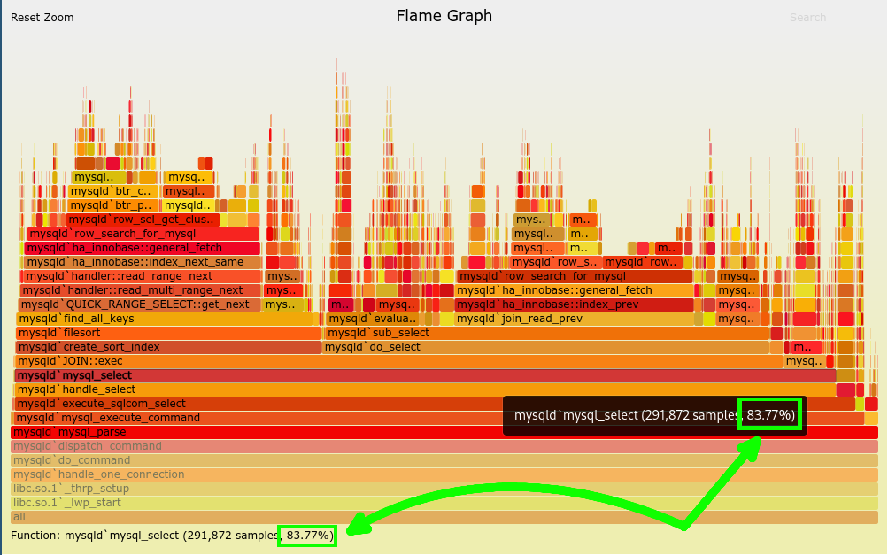
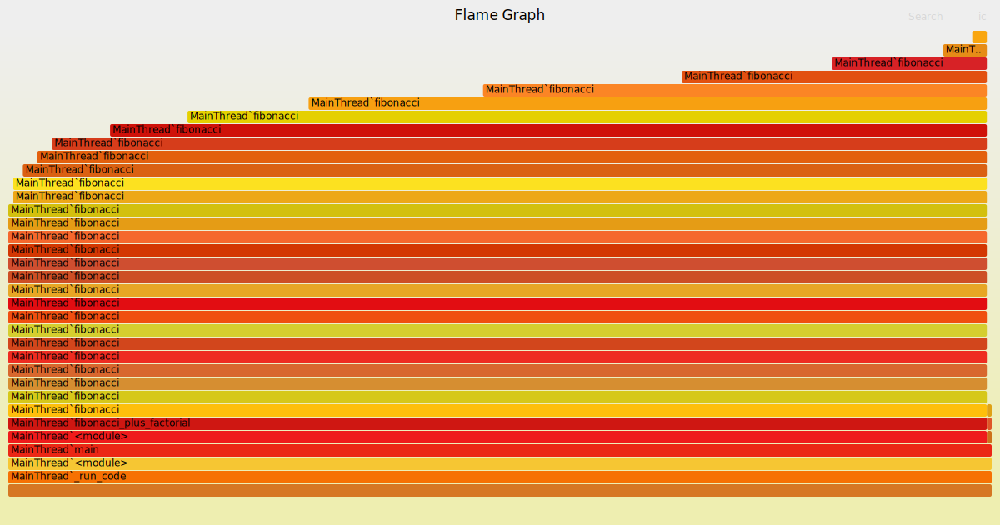

Profiling visual para Python
Table of Contents
Boas, xente.
Hoxe veño cun exemplo práctico de como podemos analizar os nosos programas de Python para atopar facilmente pescozos de botella.
Falase moito de como as optimizacións non se deben facer a cegas, senón que hai que medir que partes dun programa son as problemáticas para conseguir mellorar a execución do código de xeito eficiente, hoxe veremos como facelo de forma cómoda e práctica.
1. Gráficos de lapas (Flame Graphs)
Hai moitos xeitos de medir e visualizar o comportamento dunha aplicación, pero persoalmente o que máis cómodo me parece é a técnica dos Gráficos de lapas (Flame Graphs) descrito por Brendan Gregg. Consiste en medir canto tempo se adica a execución dunha pila de funcións e debuxalo apilando as funcións que chaman unhas a outras de xeito que canto máis espazo horizontal ocupe unha función, máis tempo lle adica o código a executala.
 [Preme aquí para ver a imaxe de xeito interactivo]
[Preme aquí para ver a imaxe de xeito interactivo]
E moi interesante como forma de explorar a execución do programa, xa que permite facer "zoom" de forma interactiva na mesma imaxe. Proba a abrir a imaxe anterior seguindo a ligazón e preme en mysqld`mysql_parse e verás que expande esa función pra ocupar todo o espazo horizontal, de xeito que se pode apreciar mellor os tempos que toma cada función a que chama esta.
Ou, pasando o cursor por enriba dunha función, coma mysqld`mysql_exec podemos ver a porcentaxe do tempo de execución do programa que se emprega dentro de esta chamada, neste caso 83.77

2. Obtendo os datos
Ben, agora que entendemos como utilizar os Flame Graphs vexamos como xerar o noso propio. Para poder facer medidas vamos necesitar algún programa que medir, así que podemos usar este, pero o proceso e o mesmo pra todos.
O máis importante a ter en conta e que esta técnica (e outras moitas de profiling) dividen o tempo de execución por función, así que se as funcións son moi longas pode ser interesante dividilas en funcións mais cortas para ter unha idea máis clara de que parte do código e o que require máis tempo.
Entón, como ilustración usaremos este programa
# Programa de exemplo, estudarémolo e veremos como vai evolucionando o
# seu rendemento
def fibonacci(n):
"""Simplemente unha función de exemplo."""
if n == 0:
return 0
elif n < 2:
return 1
else:
return fibonacci(n - 1) + fibonacci(n - 2)
def factorial(n):
"""Outra función de exemplo."""
if n < 2:
return 1
else:
return n * factorial(n - 1)
def fibonacci_plus_factorial(n):
"""Función que chama as dúas."""
fib = fibonacci(n)
fact = factorial(n)
return fib + fact
if __name__ == '__main__':
N = 35
print("[Test] Fibonacci(5): {:3d} = 5 ?".format(fibonacci(5)))
print("[Test] Factorial(5): {:3d} = 120 ?".format(factorial(5)))
print("Resultado:", fibonacci_plus_factorial(N))
Se executamos este código veremos que é bastante lento:
$ time python sample.py [Test] Fibonacci(5): 5 = 5 ? [Test] Factorial(5): 120 = 120 ? Resultado: 10333147966386144929666651337523209227465 real 0m3,905s user 0m3,896s sys 0m0,004s
Vexamos entón que e o que está tomando máis tempo utilizando Flame Graphs.
3. Preparando o entorno
Pra obter o gráfico podemos utilizar o paquete python-flamegraph. Normalmente recomendaría obtelo do repositorio fonte, pero este está desactualizado e non funciona cunha versión recente de Python.
Por sorte hai varias persoas que manteñen forks máis actualizados. O seu é escoller un cos cambios necesarios e funcionalidades que nos interesen e revisar os commits intermedios pra asegurarnos que non se introduciron cambios maliciosos antes de instalalo. A verdade e que normalmente neste punto non me quero complicar moito a vida e non vou utilizar o profiler de forma activa en código exposto a internet, asi que buscando un cos cambios mínimos imprescindibles podemos atopar o fork de nickodell. (Se buscades algo mais serio botádelle un ollo a esta nota).
Para instalar esta versión do paquete directamente a partir do GitHub podemos facer:
pip install git+https://github.com/nickodell/python-flamegraph.git
O seguinte necesario será clonar este repositorio: https://github.com/brendangregg/FlameGraph
4. Tomando medidas e analizando
Unha vez temos todo preparado podemos usalo para medir o noso programa con comando coma:
python -m flamegraph -o medida.log sample.py
Esto producirá un ficheiro medida.log cos datos necesarios, pra convertelo nunha imaxe de Flame Graph podemos executar isto (adaptando a ruta inicial a onde se haia clonado o repo brendangregg/FlameGraph:
~/repos/FlameGraph/flamegraph.pl medida.log > medida.svg
Isto producirá un ficheiro medida.svg que poderemos abrir cun navegador:
 (Preme aquí pra abrilo en modo interactivo)
{kind=link}
Podemos observar que, de forma desproporcionada, a maior parte da execución se adica a función fibonacci, así que optimicémola. Como facer isto depende de cada función, neste caso podemos pasala de forma recursiva a iterativa:
def fibonacci(n):
"""Simplemente unha función de exemplo, agora optimizada."""
seq = [0, 1]
while n >= len(seq):
seq.append(seq[-1] + seq[-2])
return seq[n]
Se executamos este código veremos que gran parte da carga de execución xa se resolveu:
$ time python sample.py [Test] Fibonacci(5): 5 = 5 ? [Test] Factorial(5): 120 = 120 ? Resultado: 10333147966386144929666651337523209227465 real 0m0,029s user 0m0,017s sys 0m0,012s
Sorprendentemente, podemos ver que non e necesario optimizar a función factorial() inda que tamén sexa recursiva, e polo tanto podería parecer que é necesario optimizala. E realmente no caso efectivo a sua execución é bastante eficiente.
5. Pechando
Vemos así que utilizando estes diagramas podemos buscar en que parte do programa nos podemos centrar pra optimizalo de forma rápida.
Normalmente non é posible optimizar un programa só facendoo cunha soa función, senón que é un proceso iterativo:
- Medir os tempos
- Optimizar función que toma máis tempo
- Repetir ata que esteamos contentos co tempo de execución
E o obxectivo deste exemplo era aplicar a optimización sobre as dúas funcións, amosando este ciclo iterativo. Pero ironicamente a miña suposición de que a función factorial() sería lenta resultou ser falsa, co que teredes que crerme cando vos digo que non soe funcionar nun paso 😉. Isto nos demostra a lección máis importante que se pode aprender sobre optimización:
Antes de cambiar nada, mide o teu programa!
E pouco máis vos podo contar, espero que vos resulte útil. Leémonos!